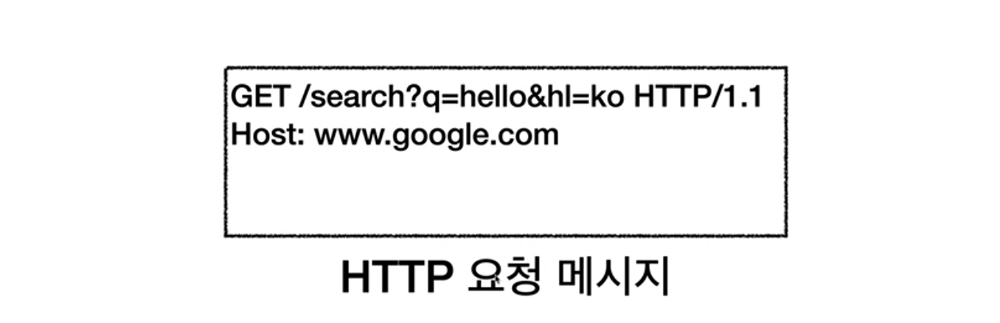
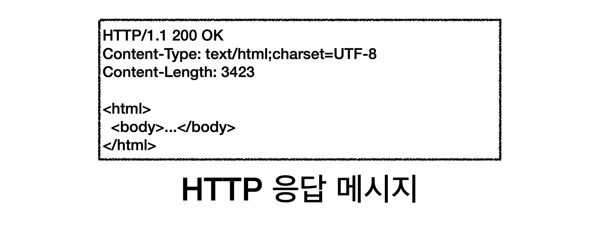

URI와 웹 브라우저 요청 흐름
- https://www.google.com:443/search?q=hello&hl=ko 요청을 보내게 되면
- 웹브라우저가 IP와 포트 정보를 찾아온다. DNS를 조회하여 IP 주소를 찾아냄
- 웹 브라우저가 알아온 IP와 port 번호로 HTTP 요청 메세지를 생성

- HTTP 요청 메세지를 전송한다.
- 생성한 요청 메세지를 socket 라이브러리를 통해 TCP/IP 계층에 전달한다.
이때, 앞에서 찾아온 IP와 port를 사용해 서버와 3way handshake로 연결 확인 후 전달한다.
- TCP/IP 패킷을 생성하여 HTTP메세지에 패킷을 씌워 인터넷망으로 전송한다.
- 요청을 받은 서버는 TCP/IP 패킷은 버리고, HTTP 메세지를 해석해
데이터를 찾아 응답 메세지를 만들어 TCP/IP 패킷을 생성해 클라이언트로 전송한다.
- 클라이언트는 응답 메시지를 받아 웹 브라우저에서 HTML을 렌더링하여 화면에 보여줌.

#Content-Type : 응답하는 데이터가 어떤 형식이고, 무엇으로 인코딩되어 있는지에 대한 내용.